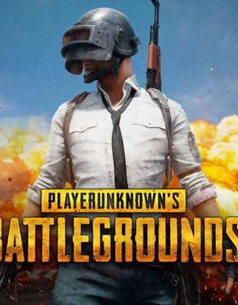

Dünya genelinde yüz binlerce oyuncusu bulunan çevrimiçi oyun Player Unknown Battlegrounds (PUBG), Nepal'de sürpriz bir kararla yasaklandı. Yasaklanma sebebi ise 'Çocukların ve gençlerin davranışlarını ve çalışmalarını olumsuz yönde etkileme' olarak açıklandı.Dünya genelinde yüz binlerce oyuncusu bulunan çevrimiçi oyun Player Unknown Battlegrounds (PUBG)